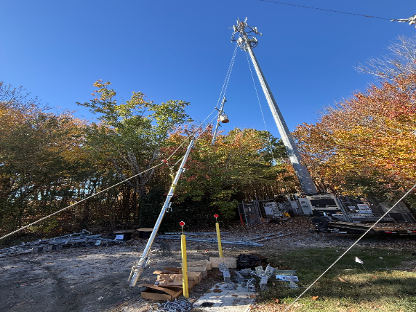
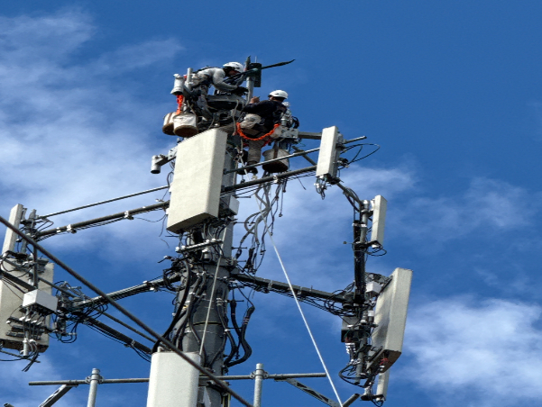

Telecommunications Infrastructure & Field Operations
At Elevated Telecom Services, we deliver turnkey wireless construction, structural upgrades, and ongoing tower maintenance with an uncompromising commitment to safety, quality, and schedule integrity.

24/7 Maintenance Window & Rapid Field Deployment
Our fully equipped field crews are ready to mobilize day or night to meet strict carrier maintenance windows and emergency call-outs[cite: 1]. Pictured here during an overnight site deployment, our team stages specialized rigging gear, safety equipment, and testing hardware to execute seamless upgrades and troubleshooting without disrupting daytime network traffic[cite: 1].

Tower Rigging, Hoisting & Carrier Upgrades
Elevated Telecom Services specializes in precision rigging and heavy-load hoisting for monopole, self-support, and guyed tower sites[cite: 2]. Shown here executing a sector frame and antenna hardware hoist, our certified tower crews utilize engineered load lines, controlled tag lines, and strict ANSI/TIA rigging standards to safely lift and install carrier infrastructure without disrupting existing site equipment[cite: 2].

Structural Mount Assembly, Modifications & Line Staging
Proper ground preparation and precision steel assembly are essential to keeping tower projects on schedule and under budget[cite: 3]. Shown here during pre-hoist staging, our crews inspect, organize, and pre-assemble galvanized sector frames, collar mounts, antenna pipes, and hybrid fiber/power trunk lines on the ground—ensuring fast, accurate installation and clean cable routing once aloft[cite: 3].

Tower-Top Antenna, Radio & Line Installation
Our NWSA-certified tower technicians execute complex tower-top installations, sector upgrades, and line replacements with uncompromising precision and safety[cite: 4]. Pictured here working aloft on a multi-carrier monopole array, our crews handle panel antennas, Remote Radio Units (RRUs), and weatherproofed jumper routing while maintaining 100% tie-off compliance under strict OSHA and ANSI standards[cite: 4].
Need a Reliable Crew for Your Next Tower Project?
Contact our team to discuss upcoming builds, structural modifications, or maintenance schedules.
Contact Us Today